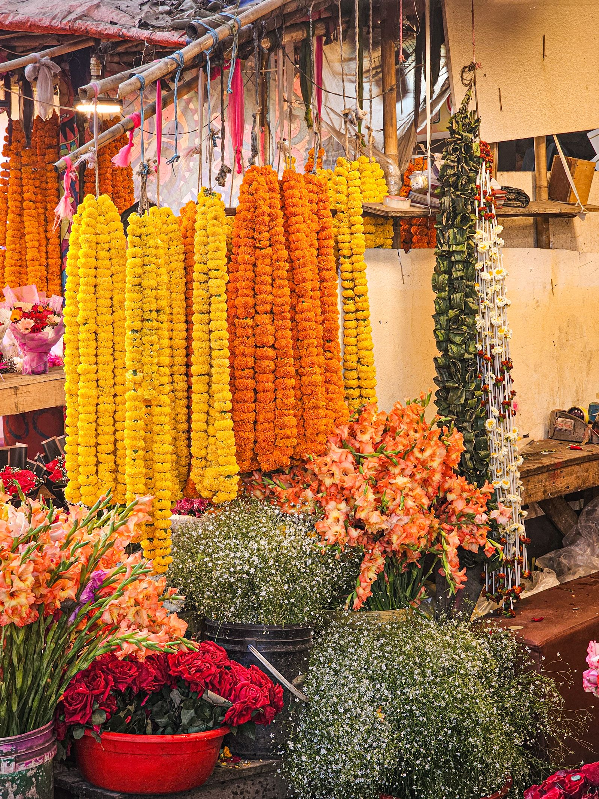

The Work · Madurai
Orders are races against a flower's clock.
Three commissions, told the way they happened: what was asked, what my hands did, and what the flowers did afterwards. Prices come from the same rate card as the home page — per foot, by flower.


108 garlands for the Chithirai procession
Asked
A temple committee in Madurai wanted 108 marigold garlands, each a full six feet, hung along the procession route before the deity came out at 6 a.m. One hundred and eight is an auspicious count; there was no rounding it down.
Strung
The order came two days early, which is the only way an order this size works. I bought three dawn lots across two mornings. My sister, my niece and a neighbour's daughter strung; I graded every basket and tied every tenth garland myself. Total stringing: 108 hours of fingers, four pairs of hands, two dawns.
Outcome
The last garland was hung at 5:40 a.m., twenty minutes before the procession. Marigold is the forgiving flower — hung in moving air, the rows were still bright when the deity came home at dusk.
A varmala pair that outlasted the heat
Asked
The Raghavan family wanted the exchange garlands in lotus buds and paneer rose — beautiful, and the two least forgiving flowers I string. The ceremony would run forty minutes; the photographs, hours; the evening was 38 degrees.
Strung
Roses were strung in the morning, half-open buds only. The lotus buds were strung at 4 p.m., three hours before the exchange, kept in banana leaf and misted twice. I delivered the pair myself, ninety minutes early, and stayed to hang them in the cool room.
Outcome
Exchanged at 7:20 p.m. At midnight the buds were still firm and the roses had opened on the string instead of dropping. The family has ordered every anniversary garland from Stall 14 since.
“The garlands went on at half past seven and my daughter's photographs at midnight show them fresh as morning. Selvi told us the lotus would hold. It held.”
Fourteen kilos of petals for Onam
Asked
A Malayali association in Madurai lays a pookalam every Onam and had been buying petals mixed in one sack — the colours bled into each other and the white went grey by nine. They asked for 14 kg, five colours, kept separate, delivered by 7 a.m.
Strung
Nothing was strung. Petals were picked off the heads at dawn — never the night before, whatever the customer offers — and laid in five banana-leaf trays, white tuberose on top where the dew could reach it, hibiscus at the bottom where its weight belongs.
Outcome
The pookalam was laid by nine o'clock, ring by ring, and the white ring was still white at the sadhya. They book the same trays every year now, a month ahead.
What an order costs
The full price shape, published the way the stall works it. No quotation games: measure your garland, pick your flower, multiply.
| Flower | Per foot | Common lengths | The honest notes |
|---|---|---|---|
| Marigold | ₹80 | Temple 6 ft · doorway 4 ft · pooja 1 ft | Keeps a full day hung in air. The festival workhorse. |
| Jasmine | ₹150 | Hair string 2 ft · pooja 1 ft · wedding 3 ft | Strung as buds; opens by evening. Never refrigerated. |
| Tuberose | ₹130 | Reception 4 ft · evening 3 ft | Perfume carries across a hall. An evening flower. |
| Rose | ₹200 | Varmala 4 ft · guest 3 ft | Half-open buds only. The dearest because the slowest. |
Delivery inside Madurai city: ₹150, free above ₹2,000. Orders needing more than six hours of stringing must be placed by 8 p.m. the evening before — that rule has no exceptions, because the flowers cannot be hurried either. Work your order out on the planner.